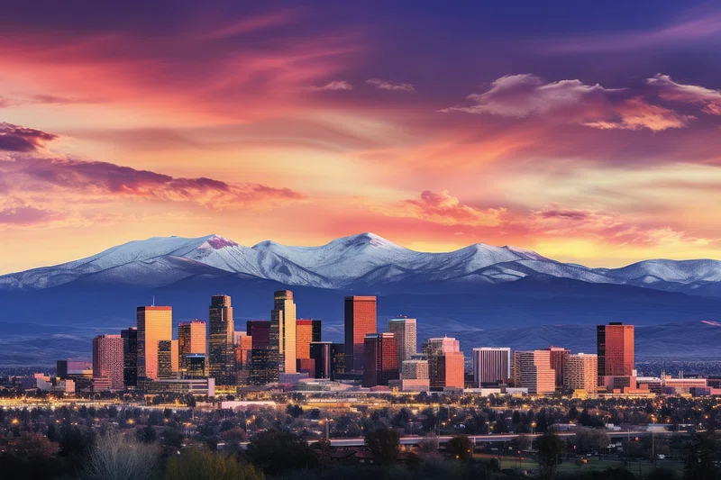

Denver
City Overview
Denver is the capitol city of Colorado. As the only true main urban hub of Colorado, Denver is unique in its size and access to city lifestyle. With a population of around 715,522 people, Denver is far and away the most poplulous area of Colorado. The city still provides a good indicator of its history of a western mining town that was settled during the Pike's Peak gold rush in 1858. The governing bodies of Colorado work hard to preserve the history of the city. Even though its a large urban area, people living in Denver enjoy its "small city" feel and its access to surrounding outdoor areas and especially the Rocky Mountains. For those who are staying in the city there is really great access to different cultural activities and dining. Denver is also home to many sports teams and arenas, and Denverites are typically pretty diehard fans for local teams.
Source: United States Census Bureau
Region and Economy
Denver is located directly east of the foothills of the Rocky Mountains which make up the front range area of the state. Most of the biggest cities and populated areas lie in this area of the state. This makes Denver a great place to be for those who like to have fairly good access to the mountains and also move north and south along the front range to other popular cities in the state. The average income in denver is $88,213 which is indicative of the city lifestyle that is enjoyed here.
Source: Visit Denver - History
Source: United States Census Bureau
Tourism and Activities
Denver itself is home to a lot of great dining and tourism. From its historical landmarks to museums and theatres, there is no shortage of ways to spend time in the mile high city. There are many activities to do around the city including the Museum of Natural History, the Denver Zoo, or one of the many art museums that are found in Denver. Denver is also home to several art districts where visitors can come see local artists or even enjoy many commisioned street art pieces. If dining is important than Denver is also home to some incredible restaurants. The city has lots of options for dining from casual eating to high class restaurants. Denver was even recently added to the michelin guide as one of the the cities where restaurants are eligible to receive michelin stars, a highly regarded award for world class restaurants.
Source: Visit Denver - Things to Do